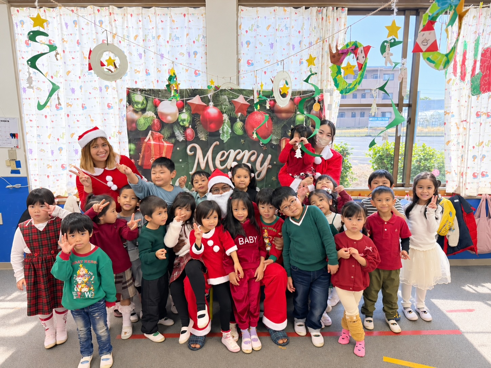

01
食育
何でも食べられるよう給食を提供し、健康な体を育みます。

保育理念 PHILOSOPHY
どんな未来でも、世界のどこでも
自分の力で生きていけるこどもを育てます。
OUR PHILOSOPHY
私たちの保育理念は、単なる預かり保育ではありません。「どんな未来でも、世界のどこでも、自分の力で自立した人間として生きていける子供」を育てることです。
子供たちが愛にあふれた人との触れ合いを経験し、自分に自信と誇りを持てるよう、愛情を注いで育てます。
自立した人間として生きていく力を育てます
どんな未来でも、どこでも生きていけるように
愛にあふれた人とのふれあいを大切にします
OUR POLICY
何でも食べられるよう給食を提供し、健康な体を育みます。
母語・母語文化を大切にしつつ、日本での生活に必要な習慣と日本語をサポートします。
たくさん褒めて、自分に自信と誇りを持てるこどもを育てます。
安心して過ごせる環境で、基本的な生活習慣を身につけます。
OUR GOALS
どんな未来でも、世界のどこでも、自立した人間として生きていく力を育てます。
たくさん褒めて、自分に自信と誇りを持てるこどもを育てます。
母語・母語文化を大切にしながら、「違い」を資産として尊重できる心を育てます。
愛にあふれた人との触れ合いを経験し、まわりの人を思いやる心を育てます。
園長メッセージは、会社の理念をもとにした仮の文です